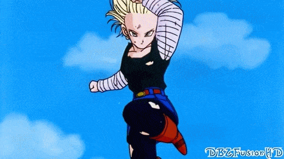
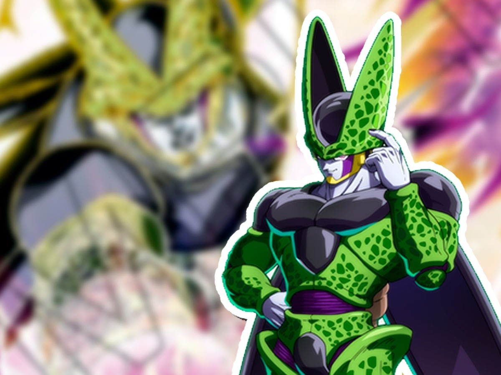
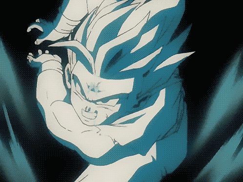

Tras llegar a la Tierra, todos los guerreros resucitados creen disfrutar de un periodo de paz. Sin embargo, apenas año y medio después de los sucesos de Namek, y creyendo que Goku había muerto en la explosión, todos sienten el Ki de Freezer en la Tierra. Aterrados, van al lugar para comprobarlo, y efectivamente: Freezer, ahora acompañado de su padre el Rey Cold, han llegado a la Tierra, para tomar venganza. Pero antes de que pasen a la acción, un misterioso chico aparece y, transformándose en Super Saiyan, derrota con facilidad a padre e hijo, dejando atónitos al resto de presentes. Dice provenir del futuro, y les da una medicina para Goku, el cual llegaría horas después, pues este padecería una enfermedad circulatoria causada por el uso del Super Saiyan.
Una vez, tal y como predijo el misterioso chico, llega Goku a la Tierra, le cuenta que viene del futuro, es el hijo que tendrán Vegeta y Bulma en poco tiempo, y le advierte del despertar de unos seres casi invencibles, conocidos como los Androides. Dichos Androides harán aparición apenas en 3 años, en la Ciudad del Sur. Tras darle dicha información, Trunks vuelve a su línea temporal, confiado de que ahora los Guerreros Z podrán con el enemigo, pues ha evitado la muerte de Goku, el guerrero más fuerte de todos. Pero, para su sorpresa, cuando despiertan, los Androides se habían vuelto más fuertes que en su línea temporal, debido al cambio que generó Trunks en su llegada al pasado. Sin miramientos, humillan a los Guerreros Z, incluido Goku en su forma Super Saiyan. Vegeta, quien había adquirido la misma transformación recientemente, es derrotado por A18, rompiéndole el brazo en el proceso.
Goku, tras la pelea, siente el dolor en su pecho debido a la enfermedad cardíaca advertida por Trunks. Tras tomar la medicina, todos hablan con Kami-Sama, el cual les da acceso a la Habitación del Tiempo, un lugar místico con una gravedad aumentada, donde 1 año dentro es equivalente a 1 día en la Tierra. En este lapso de tiempo, un nuevo enemigo aparece, Cell. Dicho bio-androide, proveniente del futuro, necesita absorber a los androides A17 y A18 para completarse. Sabiendo esto, los Guerreros Z dialogan con ellos, pues no parecen ser malvados por naturaleza. Finalmente, llegan a un acuerdo y unen fuerzas ante la amenaza común, el malvado bio-androide.
Cell, tras una serie de astutas jugadas, es capaz de hacerse con A18 y A17, y alcanzar su forma final. Sin embargo, en vez de destrozar a los Guerreros al momento, anuncia un torneo para dentro de una semana, dándoles tiempo a los artistas marciales para entrenar y mejorar, haciendo uso de la Habitación del Tiempo. Vegeta y Trunks entran primero, alcanzando un poder inmenso a su salida, pero insuficiente para derrotar a Cell. Al día siguiente, Gohan y Goku entran juntos a la habitación, alcanzando un nivel increíble, pero también, a priori insuficiente para derrotar a tan poderoso villano, dadas las circunstancias.
Llegado el día del ansiado torneo, Goku es el primero en enfrentarse a Cell, haciendo ambos un despliegue de poder al alcance de ninguno de los presentes, temiendo estos que, de no ganar Goku esa pelea, el resto no tendrían opción alguna. Dicha pelea es encarnizada, ni siquiera Goku con todo el poder de su Super Saiyan entrenado parecía tener la ventaja. Tras intercambiar golpes, Goku decide darlo todo en un súper Kame-Hame-Ha a bocajarro contra Cell, haciendo uso de la teleportación instantánea, para evitar que su enemigo lo esquivara. Sin embargo, y para desgracia de todos, ni siquiera ese ataque surte efecto. Sin más que ofrecer, Goku grita que se rinde y, tras unos primeros instantes donde todo el mundo parecía desconcertado, envía a su hijo Gohan a luchar, alegando que era más fuerte que él mismo.
Gohan, asustado, entra a la batalla, pero su corazón no es el de un guerrero. Gohan odia pelear, y durante todo el enfrentamiento con Cell se contiene para no hacerle daño real, pese a que Cell lo tortura física y psicológicamente. Viendo esto, A16 le grita a Gohan que está bien luchar por una buena causa, que no debe temer hacerlo porque salvará el planeta, los animales, y las plantas. Que luchar, en esta situación, no era un acto malvado, si no bondadoso. Cell se molesta, acabando con A16, aunque la semilla ya había sido plantada. Ante estas palabras, Gohan cambia su mentalidad, se da cuenta que está en su mano salvar el planeta y evitar que siga muriendo gente, expulsa todo su Ki de manera muy violenta y alcanza la fase conocida como el Super Saiyan 2, otorgándole un poder tremendamente superior al de Cell, y pudiendo acabar con él con un ataque que hizo temblar el planeta.
Banda sonora original (japonés)